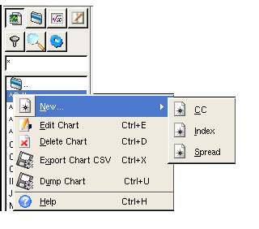

Chart Panel
Description:
The chart tab allows you to view, edit, delete, export and
search
charts. All
items that appear in the list can be either a chart or a directory. A
directory will have a blue folder icon beside the text. Selecting the
directory will move into it and update the list with the contents.
Selecting a chart will display it. At the top there is an
entry
area where you can filter the list of stocks displayed in the list. ie.
^* would list all stocks starting with ^ Note: you must use the * at
the end of the search phrase to imply everything, otherwise a literal
search will be done.

The context menu functions are as follows:
New...
Use this function to create new types of securities. Not all
types are
available, just user defined and custom types.
Edit Chart
Opens a dialog that allows you to edit chart parameters and bar data.
Delete Chart
Opens a dialog that allows you to select one or more charts to permanently delete.
Note: You can also delete one chart by pressing the Del-Key. A box will appear to confirm the deletion of the currently selected chart.
Export Chart CSV
This function will display a dialog that allows you to select charts you wish to dump the contents to ASCII CSV format. The exported files will be placed in the ~/Qtstalker/export directory.
Dump Chart
The exported file is in the Qtstalker format of key/data pairs, so it will not be useful for most of you. I include it for use in correcting data errors and for disaster recovery operations. The QtstalkerFormat quote plugin can import this file format to rebuild the chart. Don't do this unless you know what you are doing.
Add To Group
This function will display a dialog that allows you to select a group where the chart is to be added.